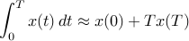
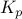
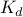

The Mindstorm “brick” can be programmed in a few completely different ways - from using a low-level language similar to assembler to using the built-in high-level tool in the the brick itself. We will use the programming language Not eXactly C (NXC), which is based on C with the addition of some extra commands to interface with the mindstorm unit. The language is fast but still intuitive to people with only a limited programming experience.
The development environment for NXC is called the “Bricx command center” and is available free of charge from sourceforge. Please, take some time to download, install and familiarize yourself with Bricx command center, and set up so that NXC works on your mindstorm unit.
The basic guide for the NXC language is the Not eXactly C Documentation , and more detailed information on how to program the hitechnic gyro can be found at the manufacturer's site.
Controller implementation
Basic structure
An NXC program is composed of code blocks and variables. There are two distinct types of code blocks: tasks and functions. A program must always have at least one task - named “main” - which is started whenever the program is run. Thus, our code will have the basic structure
#include "NXCDefs.h"
// Definition of constants
#define GYRO_PORT IN_1
// Definition of variables
// The main task
task main() {
initMotors()
calibrateGyro()
precedes(readGyroSensor,computeControlAction)
}
Here, the function “initMotors()” and “calibrateGyro()” are run once to initialize the system, while the precedes command schedules the two tasks “readGyroSensor” and “computeControlAction” which will carry out the actual control.
Initializing Motors
To initialize the motors, we will use the “setOutput” command. The syntax is
setOutput(port, field1, value1, ..., fieldN, valueN)
where port is a constant defining the relevant port (or ports), field1 to fieldN are constants defining the various properties of the port, while value1 to valueN are the associated values we would like to assign to the different properties. Please refer to the NXC manual for a complete list of the available properties and values.
We will use the code below which addresses the motors via ports A and C.
void initializeMotors() {
SetOutput(OUT_AC,
OutputMode, OUT_MODE_MOTORON+OUT_MODE_BRAKE,
RegMode, OUT_REGMODE_SYNC+OUT_REGMODE_IDLE,
RunState, OUT_RUNSTATE_RUNNING,
UpdateFlags, UF_UPDATE_MODE)
}
Here, the OutputMode field says that the motors should be turned on with their electronic brakes enabled. The RegMode states that the firmware should try to keep the two motors synchronized irrespectively of load, but not apply any lower-level velocity control. The RunState is set to allow us to specify the desired motor power, while the UpdateFlags is set to commit the changes to property values that we have specified.
Calibrating the gyro
The gyro can be read by the “SensorRaw” command, as follows
Gyro_reading=SensorRaw(GYRO_PORT);
The reading is a value from 0 to 1240. This value is offset by two things, first the fact that the value is from 0–1240 (not from -620 – 620) and secondly by the drift in the sensor. The range is corrected by subtracting 620 (variable GYRO_ZERO) from the read value, while the drift has to be estimated.
We calculate the drift term by reading the gyro multiple times while making sure that the actual pendulum angle is kept constant. The average of our readings is used to form an estimate of the offset, see the code below.
#define GYRO_ZERO 620
#define N_CALIBRATION_SAMPLES 100
#define TSAMP_CALIBRATION 10
long gyroDrift=0;
...
void calibrateSensor() {
gyroDrift=0;
for (int i=1; i<=N_CALIBRATION_SAMPLES ;i++) {
gyroDrift=gyroDrift+SensorRaw(GYRO_PORT)-GYRO_ZERO;
Wait(TSAMP_CALIBRATION);
}
gyroDrift=gyroDrift/N_CALIBRATION_SAMPLES;
}
Note that we use the “Wait()” command to wait a prespecified time (the sampling time for the calibration process) before taking the next reading. There is a slightly better way of maintaining an accurate sampling time, as we will see below, but this approach is sufficient for the calibration phase.
Note that in the end, the correct wa of reading the angular rate from the sensor becomes
Gyro_value = SensorRaw(GYRO_PORT)-GYRO_ZERO-gyroDrift;
Getting angle and angular rate from the gyro
When the controller is running, we will continuously need to acquire information about the angle and the angular rate. To this end, we use a separate task to read and process the gyro measurements. The task performs a new reading every 10 milliseconds, and estimates the angle by integrating the rate measurements from the gyro. For this to work the integration have to start when the pendulum is hanging straight down and perfectly still.
We use the approximation

to implement the integration in a simple way. The complete code for reading the gyro becomes
#define GYRO_ZERO 620
#define GYRO_PERIOD 10
long gyroDrift=0;
long gyroValue=0;
long gyroAngle=0;
long gyroTime=0;
...
task readGyroSensor() {
while(true){
gyroTime=CurrentTick();
gyroValue = SensorRaw(GYRO_PORT)-GYRO_ZERO-gyroDrift;
gyroAngle = gyroAngle+gyroValue*GYRO_PERIOD/1000;
Wait(GYRO_PERIOD-CurrentTick()+gyroTime);
}
}
Note the slightly more sophisticated way of maintaining and accurate sampling time. We get system time (via the “CurrentTick()” function) before executing the key operations, and then wait for the period minus the time that it took to run the key operations.
Computing the control action and commanding the motors
The required motor power is calculated using the PD-control algorithm that we derived earlier. Again, the controller computations are put in a special task, which is executed every 10 milliseconds:
#define L1
#define L2
#define SCALE
#define CONTROLLER_PERIOD 10
int power=0;
...
task computeControlAction() {
while (true){
controlTime=CurrentTick();
power=(-L1*gyroAngle-L2*gyroValue)/SCALE;
if (power > 100) {
power = 100;
} else if (power < -100) {
power = -100;
}
SetOutput(OUT_AC,
UpdateFlags, UF_UPDATE_SPEED,
Power, power);
Wait(CONTROLLER_PERIOD-CurrentTick()+time);
}
}
Here the constants L1 and L2 are similar to  and  and defines the relative value between the inputs. The scale constant exists to scale the power since the input is defined as an integer (no decimal). Since the power input is limited to  , the next couple of lines limits the actual power if the computed value exceeds . Finally, the output is set and the task waits until the next sampling instant.
, the next couple of lines limits the actual power if the computed value exceeds . Finally, the output is set and the task waits until the next sampling instant.
Choosing the constants
To choose the constants L1, L2 and SCALE to give good performance, we propose to use the results from the analysis section to get the appropriate relation between and , while the SCALE constant can then be tuned using trial-and-error.
The choise of sampling interval also plays a role. Since our analysis is performed in continuous time, one might conjecture that shorter sampling times will result in better performance. This is only partly true, and computational limitations in the Mindstorm unit leads us to recommend a samplig period of 10-50 ms.
Resulting program
The copmlete code can be found here. Download it and run it on your Mindstorm, to see if you can get it to work. If you continue the tutorial, you will soon see how the solution worked out for us [continue »].